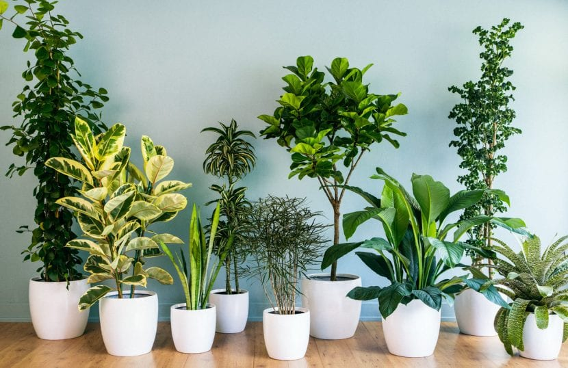

¿Que son las plantas?
Reconocemos de forma general a las plantas como seres vivientes, generalmente de color verde, que se han adaptado al medio donde viven y que, casi siempre, se encuentra fijas sobre el terreno. Sin embargo, una de las características de las plantas más destacadas es que no necesitan alimentarse de otros seres vivos para conseguir la energía que necesitan para sobrevivir. Su método para conseguir ese aporte es mediante una función denominada fotosíntesis.

Las plantas son organismos vivos que pertenecen al reino Plantae. Se caracterizan por ser principalmente autotróficas, lo que significa que pueden producir su propio alimento a través del proceso de fotosíntesis, utilizando la luz solar, agua y dióxido de carbono para generar glucosa y oxígeno. Las plantas son fundamentales para la vida en la Tierra, ya que proporcionan oxígeno y son la base de la mayoría de las cadenas alimenticias.
Tipos de plantas
Existen muchas variedades de plantas que se clasifican según diferentes criterios, como su tipo de crecimiento, hábitat, ciclo de vida, o uso. Acontinuacion te mostrare una serie de ellas.
- Helechos: Plantas que requieren ambientes húmedos y poca luz directa
- Potos: Muy resistentes, pueden crecer en diferentes condiciones de luz.
- Palmeras de interior (como la Areca): Necesitan luz indirecta brillante y un
ambiente
húmedo.
- Albahaca: Se utiliza para condimentar pastas, salsas, y ensaladas.
- Cilantro: Utilizado en la cocina latinoamericana y asiática, tanto
fresco como en salsas
- Perejil: Usado como condimento o decoración en una amplia variedad
de platos
- Orégano: Esencial en la cocina italiana, se utiliza en salsas, pizzas,
y más.
- Ajo: Utilizado como condimento en una amplia variedad de platos, por su sabor
intenso y propiedades
medicinales.
- Cebolla:Utilizado como condimento en una amplia variedad de platos, por su sabor
intenso y propiedades
medicinales.
- Cebolla Larga: Sus hojas finas y verdes se usan como condimento en ensaladas, salsas, y como
guarnición.
- Mora: También conocida como zarzamora, es una planta trepadora que produce moras negras
o
púrpuras. Es
ampliamente cultivada y también se encuentra en estado silvestre.
- Frambuesa: Aunque a menudo se le asocia con las moras, la frambuesa produce
frutos
rojos, que son dulces
y jugosos. Existen variedades de frambuesa roja y negra.
Beneficios
Las plantas ofrecen numerosos beneficios esenciales para la vida humana y el medio ambiente. En primer lugar, son fundamentales para la producción de oxígeno a través de la fotosíntesis, un proceso que convierte el dióxido de carbono en oxígeno. También son una fuente importante de alimentos, proporcionando frutas, verduras y granos ricos en nutrientes. Además, muchas plantas tienen propiedades medicinales y se utilizan en la elaboración de medicamentos. Las plantas mejoran el bienestar mental al reducir el estrés y la ansiedad, y son cruciales para la biodiversidad, ya que proporcionan hábitat y alimento a diversas especies. También ayudan a controlar la erosión, estabilizando el suelo, y juegan un papel clave en el ciclo del agua mediante la transpiración. Por otra parte, las plantas son una fuente de materiales como madera y fibras, y ayudan a mitigar el cambio climático al absorber dióxido de carbono. En el ámbito cultural, contribuyen a la estética y la recreación, mejorando la calidad de vida. En resumen, las plantas son esenciales para nuestra salud y el equilibrio del ecosistema.
Importancia
Comer plantas saludables es fundamental para mantener una buena salud. Son ricas en nutrientes esenciales como vitaminas, minerales y fibra, que ayudan a fortalecer el sistema inmunológico y reducir el riesgo de enfermedades crónicas como diabetes y enfermedades del corazón. Además, su alta fibra y bajo contenido calórico promueven la saciedad, ayudando a controlar el peso. Las plantas también contienen compuestos fitoquímicos que pueden reducir la inflamación y mejorar la salud cardiovascular. Una dieta rica en frutas y verduras se ha asociado con un menor riesgo de depresión y ansiedad. Además, elegir plantas saludables contribuye a prácticas alimenticias más sostenibles, beneficiando tanto nuestra salud como el medio ambiente.